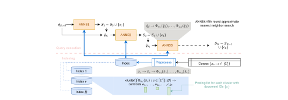
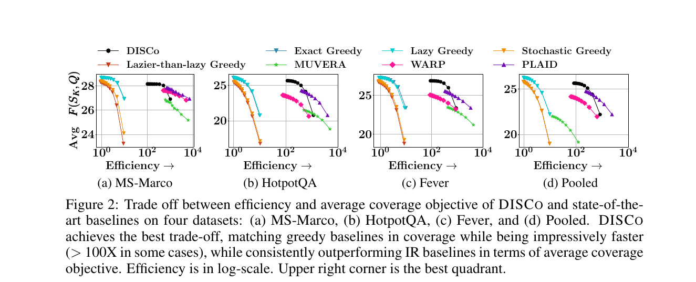
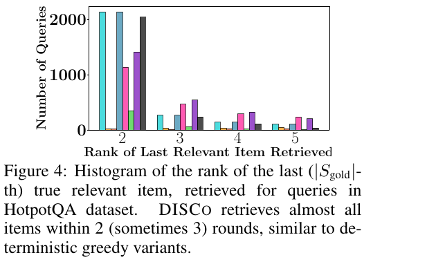
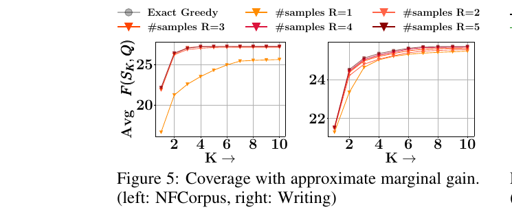
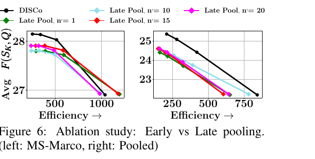

Many modern retrieval tasks — multi-hop QA, table QA, schema retrieval for text-to-SQL — are collective: no single passage answers the query, but a small subset together does. We recast first-stage dense retrieval around a submodular query-coverage objective, and show that its greedy maximization can be folded into a vector index. DISCo is the resulting indexed retriever — a multi-vector dense index in a lifted space, queried in K rounds, that delivers near-greedy coverage at over 100× the speed of an exact greedy baseline.
Motivation
Classical IR scores documents independently against a query and returns the top-$K$. The unspoken assumption is that a relevant document is self-complete — that it answers the query on its own. For a growing class of tasks, this is no longer true. Consider the multi-hop question, "Which computer scientist from Clamart was an editor of Algorithmica?" The answer is assembled from three Wikipedia passages: one names the editors of Algorithmica, one establishes that Bernard Chazelle was an editor, and one notes that Chazelle was born in Clamart. No single passage carries both Clamart and Algorithmica.
The same shape recurs across multi-hop QA, knowledge-graph QA, table QA, and schema retrieval for text-to-SQL. In each, evidence is spread across items, and competing them on a per-item relevance score is the wrong primitive. Practitioners cope by inflating $K$ and praying for recall, but a top-$K$ packed with three biographies of Chazelle covers fewer query atoms than a thoughtful set of three. What is needed is a relevance score on item subsets, and a first-stage retriever that optimizes it.
Problem Setup
Following recent late-interaction retrievers, we encode each query and each corpus item as a bag of contextual token vectors. A query is $Q = \{q_1, \dots, q_M\} \subset \mathbb{R}^d$ and a corpus item is $X_c = \{x_1, \dots, x_L\} \subset \mathbb{R}^d$. All vectors are unit-normalized. We seek a small subset $S \subseteq \mathcal{C}$ of items whose token vectors collectively cover the query token vectors:
\[ F(S, Q) \;=\; \sum_{q \in Q}\, \max_{x \,\in\, \bigcup_{c\in S} X_c}\, q^{\top} x; \qquad \max_{S \subseteq \mathcal{C}} F(S, Q) \;\;\text{s.t.}\;\; |S| \le K. \]Two features of $F$ are worth noting. First, it generalizes the per-document MaxSim score that powers the ColBERT family — but with a single outer max over the union $\bigcup_{c \in S} X_c$ instead of an outer sum over $c \in S$. Replacing the sum with a max removes the additive credit a top-$K$ retriever pays for redundant coverage. Second, $F$ is monotone and submodular: adding more items only helps, but each new item helps less than the last.
Submodularity hands us a near-optimal greedy algorithm — pick the item with the largest marginal gain at each round, $K$ rounds total — with the standard $(1 - 1/e)$ guarantee. But the bottleneck is the same one facing top-$K$ retrievers, only worse: at each of $K$ rounds, the greedy algorithm scores every item in the corpus. On MS-Marco's 8.8M-passage corpus, even at one millisecond per marginal gain, $K=10$ rounds take over 24 hours. The challenge is to do greedy, in sublinear time per round, by indexing the corpus once.
From Marginal Gain to a Lifted Dot Product
Building an index for a complicated, query-and-state-dependent score function is harder than building one for a simple dot product. The trick that powers DISCo is to rewrite the marginal gain until it looks like a dot product over fixed corpus vectors and a query vector that only depends on the current coverage.
Step 1 — A clean form for the marginal gain
For any $c \notin S$,
\[ F(c \mid S, Q) \;=\; \sum_{q \in Q} \max_{x \in X_c} \Big[\, q^{\top} x \;-\; \max_{u \in S}\, \max_{x' \in X_u}\, q^{\top} x' \,\Big]_{+} \]where $[\cdot]_+ = \max(\cdot, 0)$ is the hinge function.
Read this aloud: for each query token $q$, count only the score that exceeds the best score the current set $S$ already gives that token. If a new item $c$ would only re-cover what $S$ already covers, the inner hinge zeros out and $c$ contributes nothing — exactly what we want from a coverage objective. The structure is suggestive but not yet indexable: the inner term inside the hinge couples $x'$ to both $S$ and $Q$, and the corpus side cannot be precomputed.
Step 2 — Push state into the query, freeze the corpus
The second term inside the hinge, $\max_{u \in S} \max_{x' \in X_u} q^{\top} x'$, is just $F(S, q)$ — the coverage value of $S$ on the singleton query $\{q\}$. If we promote each query token to a $(d{+}1)$-dimensional state-aware vector and each corpus token to a $(d{+}1)$-dimensional state-free vector,
$\widehat{q}_S \;:=\; [\,q;\; F(S, q)\,] \in \mathbb{R}^{d+1}$.
The trailing coordinate carries everything we need to remember about the items already chosen — for
this query token. As $S$ grows, only the query side updates.
$\widehat{x} \;:=\; [\,x;\; -1\,] \in \mathbb{R}^{d+1}$.
Crucially, $\widehat{x}$ is independent of both $S$ and $Q$. Build it once at indexing time; never touch
it again at query time.
With these augmentations, the marginal gain becomes a sum of hinges of dot products in the lifted space:
\[ F(c \mid S, Q) \;=\; \sum_{q \in Q} \max_{x \in X_c}\, [\,\widehat{q}_S^{\top}\, \widehat{x}\,]_{+}. \]The dependency on $S$ has been transferred entirely to the query side. The corpus tokens sit still — exactly the property a static index needs. The remaining obstacle: standard ANN indexes dot products, not hinged dot products.
Step 3 — A random projection that mimics the hinge
The final move is to approximate the hinge of a dot product by an ordinary dot product in a higher-dimensional space — at which point any off-the-shelf vector index will do. For a random hyperplane $w \sim \mathcal{N}(0, I_{d+1})$, define the feature map
\[ \Phi_w(u) \;=\; \tfrac{1}{\sqrt{2}}\, [\,u;\; \mathrm{sign}(w^{\top} u)\cdot u\,] \;\in\; \mathbb{R}^{2(d+1)}. \]For any $u, v \in \mathbb{R}^{d+1}$ and $w \sim \mathcal{N}(0, I_{d+1})$,
\[ \Phi_w(u)^{\top}\, \Phi_w(v) \;=\; [\,u^{\top} v\,]_{+} \quad \text{with probability } p \ge \tfrac{1}{2}. \]Drawing $R$ independent hyperplanes and taking the maximum over the $R$ replica scores boosts this to $1 - 1/2^R$, and a union bound over $|Q|$ query tokens gives the full guarantee.
The projection is asymmetric in a useful way: the score is either $u^{\top} v$ (when $\mathrm{sign}(w^{\top} u)$ agrees with $\mathrm{sign}(w^{\top} v)$) or $0$ (when they disagree) — and a Charikar-style argument fixes the agreement probability at $\ge 1/2$ regardless of the sign of $u^{\top} v$. With $R = 8$ replicas, a typical query of $|Q| < 32$ tokens is correctly approximated with probability $\ge 0.875$ — and in practice the union bound is loose, so this is conservative.
Putting the three steps together, we replace the exact greedy marginal gain with its random-projection approximation:
\[ G_{w_{1:R}}(c; S, Q) \;=\; \sum_{q \in Q}\, \max_{r \in [R]}\, \max_{x \in X_c}\, \Phi_{w_r}(\widehat{q}_S)^{\top}\, \Phi_{w_r}(\widehat{x}). \]The right-hand side is — structurally — a MaxSim score with an extra max over $R$ replicas. Anything that can index MaxSim, can index this.
The DISCo Pipeline
DISCo turns the marginal-gain approximation $G_{w_{1:R}}$ into a working multi-vector retrieval engine. The architecture builds on the IVF-with-residuals tradition of ColBERT-v2 and PLAID, with three deliberate departures: lifted vector spaces, $R$ replica indices, and per-round state mutation of the query.

1Indexing — once, offline, query-agnostic
For each of the $R$ projection vectors $w_r$, we build a separate IVF sub-index over $\{\Phi_{w_r}(\widehat{x}_c) : c \in \mathcal{C}\}$. Concretely: augment all corpus tokens to $(d{+}1)$ dimensions; project to $2(d{+}1)$ via $\Phi_{w_r}$; cluster into $B$ centroids by k-means; for each token, keep its nearest centroid id $b^*$ and a quantized residual $\Delta$; store the inverted lists (centroid → document ids) and the forward lists (document → atom $(b^*, \Delta)$ codes). The result is $R$ sister indices, all built once.
2Query — $K$ rounds, mutating state, sublinear per round
Query processing proceeds for $K$ greedy rounds. Each round consults all $R$ replica indices, and progresses through six pruning stages — the candidate pool shrinks while the score approximation gets sharper. The stages are graded approximations of the true marginal gain, ending at the exact value:
Two things happen between rounds. First, the augmented query vectors $\widehat{q}_S$ are recomputed to reflect the new coverage state — so the same query token "asks for less" of the corpus from one round to the next. Second, nothing on the corpus side changes. The same indices are reused $K$ times, but each time they are probed with a different query embedding.
Let $S_K$ be the set returned by DISCo's greedy procedure with $R \ge \log(|Q|/\delta)$ random projections, and let $S^*$ be the optimum of $F(\cdot, Q)$ at budget $K$. Then
\[ \mathbb{E}_{w_{1:R}}\!\left[\, F(S_K, Q) \,\right] \;\ge\; \big(1 - 1/e - \delta\big)\cdot F(S^*, Q). \]The randomized projection costs only an additive $\delta$ on top of the classical $(1 - 1/e)$ greedy bound — and $\delta$ is exponentially small in $R$.
Experimental Findings
DISCo is evaluated across seven retrieval benchmarks, against two families of baselines: classical submodular solvers (Exact / Lazy / Stochastic / Lazier-than-lazy Greedy), and modern late-interaction IR engines (PLAID, MUVERA, WARP). The two families are useful foils — the greedy solvers cap coverage but pay linear-in-corpus time; the IR engines are fast but optimize the wrong objective (independent top-$K$). The setup is summarised below; full details in the paper.
Coverage vs. efficiency: the central tradeoff
The headline plot reports average coverage $\overline{F}_K$ on the y-axis and per-query speedup over Exact Greedy on the x-axis (log-scale). The upper-right corner is the goal — high coverage and fast queries. Greedy variants (cyan, orange) cluster in the upper-left: maximal coverage, painfully slow. IR baselines (purple, pink, green) cluster in the middle-right: fast, but dominated on coverage. DISCo lives in the upper-right.

Does coverage actually reward the gold subsets?
On HotpotQA, every query has a gold pair of supporting passages — both are needed to answer. We can therefore ask a sharper question: of the methods listed, which actually retrieves the full gold subset within a small budget? We measure the rank at which the last gold passage shows up. A low number means full recall of the gold pair within a tight $K$.

Approximation quality: how many random projections are enough?
The theory says $R \ge \log(|Q|/\delta)$ projections suffice to drive the approximation gap below $\delta$. The empirical question is how loose the union bound is — i.e., how few projections we can get away with in practice. We sweep $R$ from 1 to 5 and compare the resulting coverage trajectories to the Exact Greedy skyline.

Architectural ablation: why early pooling beats late pooling
A natural alternative to DISCo's design is late pooling — run all $R$ replica indices independently end-to-end, each producing its own top-$n'$ candidates, then merge and rerank. It is simpler, more parallel, and more obvious. It is also worse.

One number: error against gold and MAP
Beyond the coverage curves, two scalar metrics summarise alignment with HotpotQA gold sets — coverage error against the gold pair $|F(S_{\text{gold}}, Q) - F(S_K, Q)|$ averaged over queries, and Mean Average Precision treating the retrieved sequence as a ranked list.
Two takeaways: DISCo matches the exact greedy ceiling on both metrics, and the IR baselines lag — most severely MUVERA, whose single-vector encoding cannot represent collaborative coverage at all. Stochastic and Lazier-than-lazy Greedy fare worse still — their query-agnostic random pruning kills coverage even at moderate budgets.
Takeaways
- Collective retrieval — the right primitive when no single item answers the query — has a clean formulation as monotone submodular coverage maximization in vector-bag space.
- The greedy algorithm's marginal gain has a hidden lifted-dot-product form: push state into the query side, freeze the corpus side at $[\,x;\, -1\,]$, and the rest is just MaxSim with extra projections.
- A simple sign-based random projection turns the hinge into an ordinary dot product, with high-probability accuracy from a small $R$ — eight replica indices were enough across every benchmark we tried.
- DISCo packages this into a multi-vector IVF retriever that runs greedy in $K$ sublinear rounds — matching exact-greedy coverage at over 100× the speed on MS-Marco.
Contact
If you have questions or suggestions, please reach out to any of the authors.